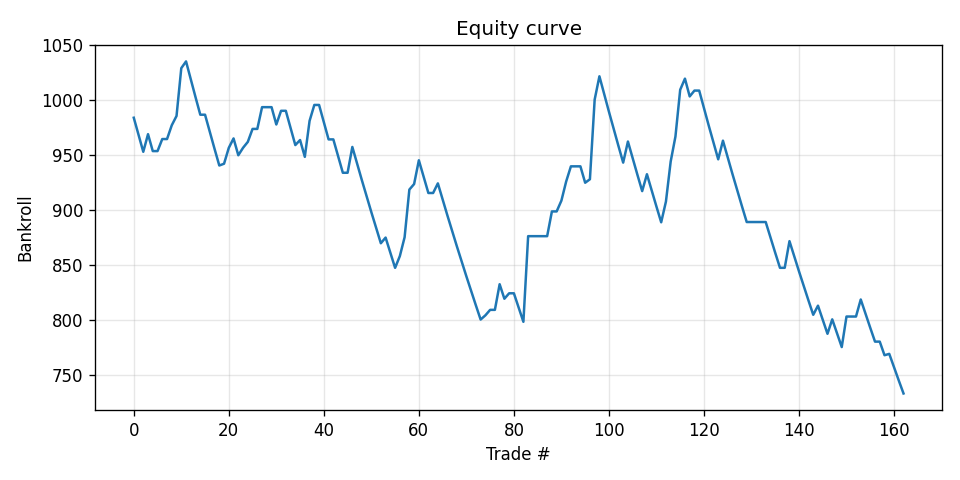
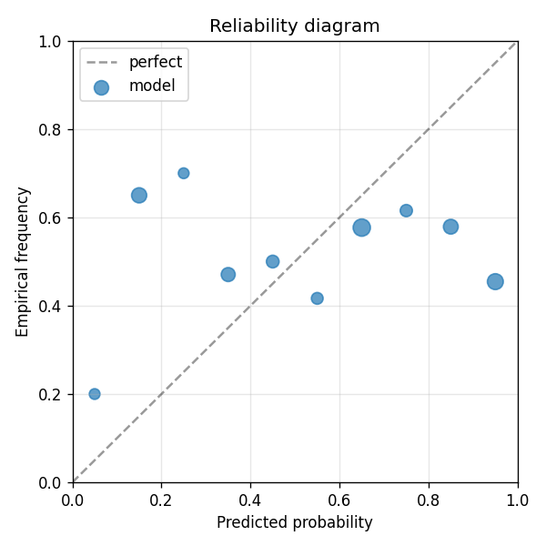

Original spec targeted ITF Challenger tour, where independent commentary confirms sportsbook under-modeling. tennis-data.co.uk does not cover ITF Challenger; we use ATP main draw as the v1 substitute (also has soft counterparty in Series 250 / outer rounds). Future iteration should wire Jeff Sackmann's tennis_atp_challenger CSVs + an odds source (oddsportal scrape) for true ITF coverage. Edge thesis (ATP main): surface specialism, scheduling fatigue, ranking momentum.
| metric | value |
|---|---|
| brier_model | 0.32423285192897666 |
| brier_market | 0.19901070295544693 |
| brier_improvement | -0.12522214897352973 |
| accuracy_model | 0.50920245398773 |
| accuracy_market | 0.6871165644171779 |
| n_events | 163 |
| n_trades | 134 |
| hit_rate | 0.3880597014925373 |
| gross_return | -0.26684323842353197 |
| net_return | -0.26684323842353197 |
| sharpe | -1.247334205530707 |
| max_drawdown | -0.29191321131930986 |
| label_shuffle_brier_improvement | null |

